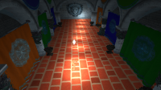
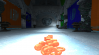
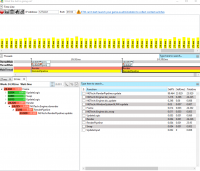
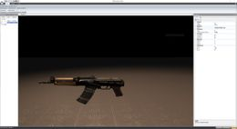

I am experienced in gamedev, mobile and web development with different frameworks and tools.
Technology: TypeScript/JavaScript, Go, Nginx, PostgreSQL, MySQL, MariaDB, Redis, Vue, React, Svelte, NestJS, Express, ReactNative, Sentry, SonarQube, TelegramAPI, Docker, Gitlab-CI, Jenkins, JSDoc/CompoDoc, Swagger, WebGL, ElasticCloud, ElasticSearch, RegeXP, KuberNetes, REST API
Languages: TypeScript/JavaScript, Go, SQL, Docker, Shell, Yaml, JSON, RegeXP
Result:
1) The company website:
Frontend - Vue (with WebGL module), particularly React.
Backend - fullTime, using Express and NestJS frameworks, particularly Go.
The backend has passed the path of development from a monolith to microservices.
HighLoad optimizations and internationalization.
2) Telegram bots (plugin for Jenkins, chatBots for optimization of processes in the company)
3) Integrations with 3d party services (SalesForce, Potok.io, Webinars, Hackathons)
4) Backend for the special project what is analyze lungs of human on COVID-19 (SberHealth), on the site side
5) The project of link shortener (sc.link) - with opened API and analytics. (FullTime backend, Partially frontend on Svelte)
6) The search engine for documentation site based on SphinX and ElasticSearch
7) Managed service for OpenShift (OpenShift as service) - in collaboration with the outsourcing team
8) Was created the unified infrastructure for team (DevOps/ as TechLead). Later it was scaled to the whole company
Roles:
- Release support;
- Code and technical review
- Meetings and negotiations
- R&D
- Build automation
- Team Leadership and mentorship
- Testing
- Partially DevOps. Linux-engineer. IT-consulting. Organization of work the team
- Learning of interns
- Help with mass-media events. Was invited as expert in some events ( SberCode hackaton)
- Work with contractor teams how as customers and in collaboration
Technology: Cordova, NodeJS, IonicJS, Ionic, Angular 5, OpenCart, JQuery, MongoDB, REST API
Languages: JavaScript, TypeScript, SQL, noSQL, PHP, CSS
Result: 2 released applications on Android/iOS.
Roles:
- Working under client-side of e-commerce applications on TypeScript (ionic-angular);
- Writing server-side on NodeJS/PHP;
- Deploying on Android, iOS;
- Home-projects (clean Cordova+JQuery, Flutter), server-side (NodeJS+MongoDB);
- Release support;
- Code and technical review
- Meetings and negotiations
- R&D
- Build automation
- Team Leadership and mentorship
- Learning of interns
Technology: OpenCart, JQuery, Bootstrap
Languages: JavaScript, SQL, PHP, CSS
Result: Automatization of trade-process. Released
Roles:
- SMM, Management.
- Integration OpenCart with other add-ons (downgrade and upgrade for a used custom build);
- Develop document system (for a post).
- Develop the feedback system and hot-fixes (php errors and security fixes. Integration with Google ReCaptcha);
- Integration modules between.
- IT consulting.
Technology: Cocos Studio
Languages: JavaScript, JSON
Result: Prototype of Match3 game
Roles:
- Develop game logic, assets, tools.
Technology: Unigine, Unity3D
Languages: Unigine Script, C#
Result: Released MMO-Game to open-beta test
Roles:Technology: OpenGL,OpenGL ES 3.1, OpenAL, RapidJSON, MyGUI, Scaleform, NVAPI, AMDAPI, WinForms, DevExpress, PhysX 4.0, DoxyGen, Compute shaders, CMake, GLFW, Autodesk 3D Studio Max SDK
Languages: C++, Lua, GLSL, C++/CLI, C#
Roles: Full development of game engine from scratch. With tools and all sub-systems. Many code fragments were migrated from Vega Engine.
Features:
1) Hybrid renderer: Deferred Shading, Forward+ rendering
2) SSAO, SSDO
3) Physic based rendering
4) Frustum Culling
5) Hardware Occlusion Culling
6) OpenGL 4/OpenGL ES 3.1 Render
7) Version layer for older devices(emulation). (from opengl 4.5 to 3.3)
8) Parallax Occlusion Mapping
9) Steep Parallax Mapping
10) Parallax Mapping
11) FXAA
12) Virtual File System.
13) Profiler support (in web browser or Brofiler).
14) BreakPad for mini-dump generation.
15) Serialization/Deserialization in JSON
16) Level, Physics, Material (node based) Editors
17) Automatization of build: own project building system using CMake (Building by one button) from the editor. with packaging(with running compilers), automatic generation of documentation.
18) Android, MacosX, Linux support for Runtime
19) CMake support and generation
20) Lua/C++ for game scripting with caching
21) Audio presets: Background sounds, 3D sounds
22) myGUI and Scaleform implementation
23) Rigid body, character controller, joints, physics materials, physics serialization.
24) Own Serialization system for editor.
25) Own Reflection System for editor.
26) CMake as secondary build system.
27) Animation system (per-vertex).
28) Own mesh format + Autodesk 3D Studio Max exporters.
29) Own window system (GLFW for PC Runtime, and own on Android runtime. Partially replaced on SDL).
30) Own math library: Vec2, Vec3, Vec4, Mat3, Mat4, Quat.
Olders Screens - many deprecated (Lights, Physics bodies, Parallax, profiler, level editor and etc):
Programmers art
Technology: Ogre3D, DX9-11, OpenGL, WxWidgets, PhysX 2.8.x -> Havok Physics, RapidXML, MyGUI, OpenAL, STL, FFMPEG, Boost Threads->TBB, DoxyGen
Languages: C++, Lua, GLSL, HLSL, XML
Roles: Develop first own game engine as learn C++, principals and game architectures.
Features:
1) Day-night cycle
2) Water simulation
3) Hybrid renderer: Deferred Shading, Forward rendering, Deferred Lighting, Inferred Lighting support
4) SSAO, SSGI and VPL support
5) Level Editor
6) Script Editor with debugger
7) Serialization/DeSerialization in XML
8) Multi-threaded decoder of video
9) Audio presets: Background sounds, 3D sounds
10) Full myGUI implementation
11) Rigid body, character controller. Physics Animation (Havok)
Technology: WinForms, DevExpress, JSON
Languages: C#
Roles: Example of node based shader editor developed as a student project.
Technology: X-Ray Engine. OpenGL
Languages: C++, GLSL, Lua
Roles: Bug fixes. IT consultation on graphics theme (OpenGL Renderer, GLSL bugfixes) and scripting. Consultation about using of libraries and actual frameworks. Porting original source code on x64. Fixes C++ templates for modern compilers.
Technology: RabbitMQ, PostgreSQL
Languages: Go, SQL
Roles: Implementation backend server (queue manager without REST API) on Go Lang, for government company (as test case).
Technology: MySQL
Languages: Go, SQL
Roles: Develop adds board similar AVito/Amazon, for one student, without Rest API, Frontend, only backend. (Switch to develop branch). With Admin panel.
Apart from being a developer, I enjoy most of my time being outdoors. In the winter, I am an avid skier. During the warmer months here in Moscow, I enjoy autosport and walks in the park and night city.
When forced indoors, I spend a large amount of my free time exploring the latest technology advancements in the development world or reading books.
{kind=link}
{kind=link}
{kind=link}
{kind=link}
{kind=link}